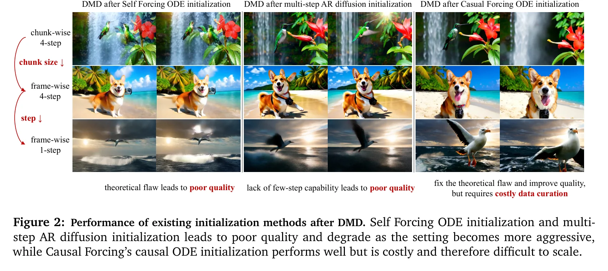
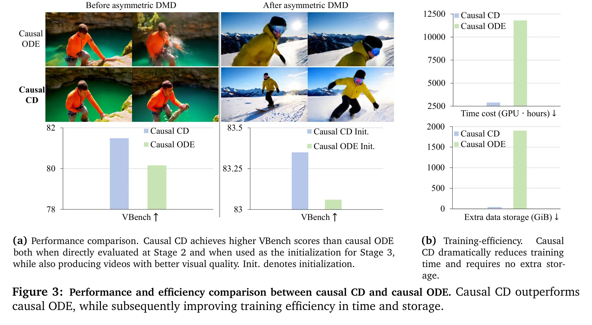
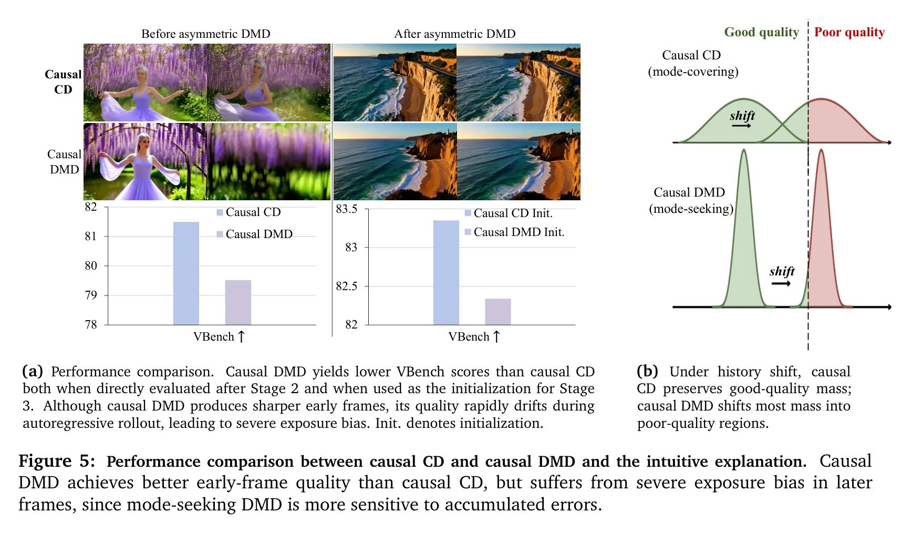
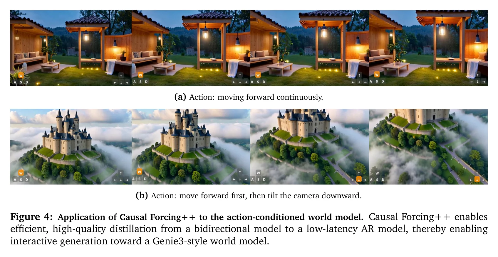
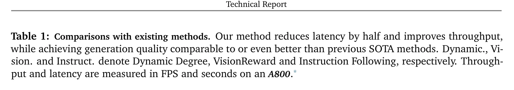
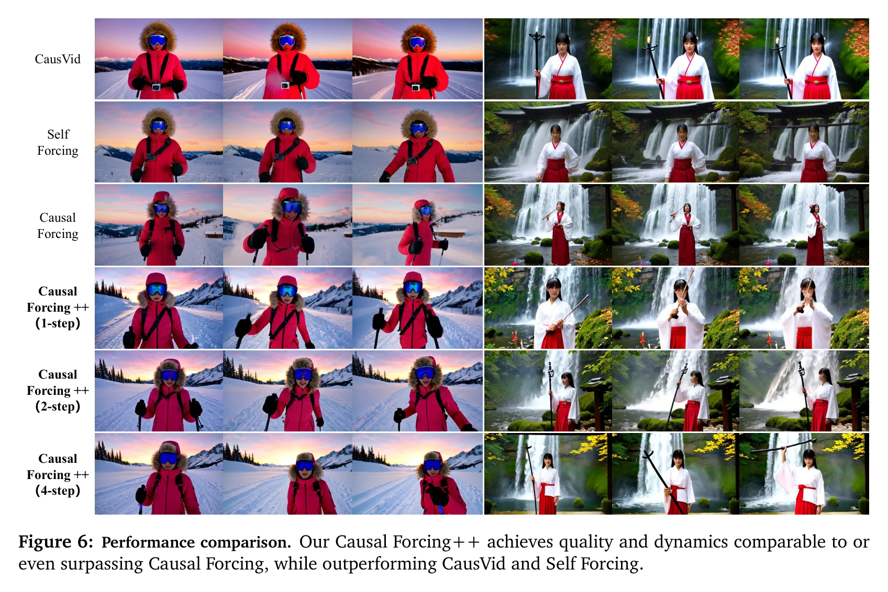
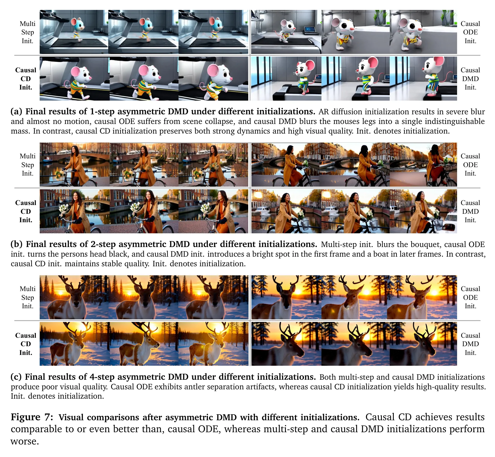
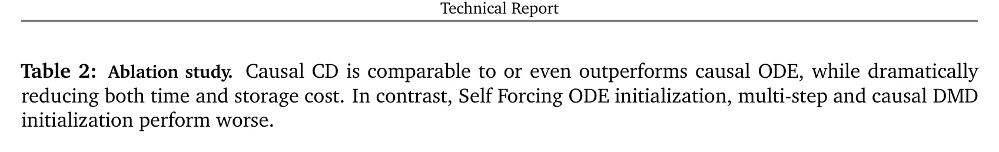

初始化困境：三种策略为何全部失败
Causal Forcing（ICML 2026）在 chunk-wise 4-step 设置下取得了强大结果，但当我们推到更激进的 frame-wise 1-2 step 设置时，一个根本问题浮出水面：现有少步AR学生初始化策略全部失败。论文系统地诊断了三种候选方案各自的致命缺陷。
实时交互式视频生成的核心需求是：模型必须逐帧自回归生成，使用户能在生成过程中干预后续帧。chunk-wise 4-step 仍面临粗粒度响应和不可忽略的采样延迟。frame-wise 1-2 step 才是真正实现低延迟交互的设置——但也正是现有方法的滑铁卢。
三种初始化策略的互补失败
Self Forcing ODE 初始化
诊断：架构失配
双向教师的ODE轨迹依赖未来帧，AR学生无法拟合。MSE回归退化为条件期望 → 模糊视频。在frame-wise 1-step下灾难性崩溃。
多步AR扩散直接初始化
诊断：缺乏少步能力
跳过少步蒸馏，直接用多步模型。近似误差在self-rollout中逐帧累积放大。frame-wise 1-step下几乎坍塌。
Causal ODE 初始化
诊断：正确但代价高昂
需预计算完整PF-ODE轨迹（48步/样本）。80K视频规模下：11600 A800-GPU小时 + 1900 GiB存储。随难度增长而恶化。

缩小chunk size增加了AR调用次数，减少采样步数增加了每次调用的近似误差。两个效应在self-rollout中指数级复合：(1) 前序帧的误差作为后续帧的条件，(2) 每帧仅1-2步去噪，没有足够的扩散步数来纠正累积偏差。这使得初始化质量成为决定性因素——DMD是"精炼器"而非"完整训练器"，无法弥补糟糕初始化带来的优化负担。
初始化成本可视化
SVG 可视化：三种初始化策略的训练成本对比。Causal CD将Stage 2成本从11600降至2900 A800-GPU小时，辅助存储从1900 GiB降为零。
论文的诊断揭示了一个简洁的不可能三角：AR对齐（architecturally aligned）、少步能力（few-step capable）、可扩展（scalable）。Self Forcing ODE满足可扩展但不满足AR对齐；多步AR扩散满足AR对齐但不满足少步能力；Causal ODE满足前两者但不满足可扩展。Causal CD首次同时满足全部三个条件——这是本文的核心贡献。
Causal CD：等价目标、更优路径
本章是论文的理论核心。Causal Forcing++ 的关键洞察不在于发现了一个新的蒸馏目标，而在于证明Causal ODE蒸馏和Causal CD学习同一个目标函数——AR条件流映射（一致性函数），区别仅在于监督信号的获取方式。
2.1 等价性证明
Causal ODE蒸馏通过从AR教师的PF-ODE轨迹上采样配对数据 $(x_t^i, x_0^i)$，训练学生模型 $G_\theta$ 直接回归干净样本 $x_0^i$：
其最优解是AR条件流映射 $f_\phi$：
Causal CD将标准一致性蒸馏目标提升到AR设置，通过相邻时间步之间的局部一致性来学习同一个目标：
其中 $\hat{x}_{t-\Delta t}^i$ 通过AR教师的单步ODE获得，$\theta^-$ 是 $\theta$ 的EMA（stop-gradient），$w(\cdot)$ 是时间步权重。在flow matching参数化下：
2.2 误差界与等价性
论文证明了Causal CD的最优解 $G_{\theta^*}$ 与目标流映射 $f_\phi$ 之间的误差由ODE求解器的数值误差界定：
其中 $p$ 是ODE求解器的阶数。这意味着 Causal ODE蒸馏和Causal CD学习完全相同的目标，区别仅在于监督信号的获取路径。
2.3 两个关键优势
优势一：效率飞跃
Causal ODE：需预计算完整PF-ODE轨迹（48步/样本），离线存储配对数据
Causal CD：仅需相邻时间步间的单步教师ODE，在线执行于真实视频
→ 训练成本降低4×，辅助存储降为零
优势二：更高质量
Causal ODE：回归 $x_t^i$ 到 $x_0^i$（跨越整个 $t \to 0$ 区间），要求学生一步跨越巨大gap
Causal CD：配对 $x_t^i$ 与 $\hat{x}_{t-\Delta t}^i$（相邻时间步），每步gap仅为 $\Delta t$
→ 更小的per-step优化gap，更易优化

这个优势在双向蒸馏文献中已有先例：Consistency Models（Song et al., 2023）和LCM（Luo et al., 2023）表明，相邻时间步间的一致性目标比跨区间回归更易优化。直觉上，回归目标要求学生从 $t$ 处的噪声状态直接预测 $t=0$ 的干净状态，这是一个高度非线性的映射；而CD目标只要求相邻时间步的输出一致，每个子问题更简单。当这种局部优势与因果AR设置结合时，效果尤为显著。
2.4 Causal CD vs Causal Score Distillation
论文还考察了一个自然的替代方案：用Causal Score Distillation（Causal DMD）替代Causal CD作为初始化。虽然score distillation在双向蒸馏中通常优于consistency distillation，但在AR设置下出现了反转：

DMD优化反向KL散度（mode-seeking），CD优化正向KL散度（mode-covering）。在双向设置中，mode-seeking集中概率质量于高密度模式，产生更锐利的结果。但在AR rollout中，前序帧的累积误差导致条件分布偏移——mode-seeking的DMD将概率质量集中到错误的高密度区域（exposure bias放大），而mode-covering的CD保留了更多good-quality质量区域。这解释了为什么Causal DMD在首帧质量更高，但在长序列中迅速退化。
三阶段Pipeline与代码实现
Causal Forcing++ 继承了 Causal Forcing 的 Stage 1（Teacher Forcing AR扩散训练）和 Stage 3（非对称DMD + 学生self-rollout），核心创新在于将 Stage 2 替换为 Causal CD。
整体架构
SVG 可视化：Causal Forcing++ 三阶段流水线。Stage 2 使用 Causal CD 替代 Causal ODE，实现4×训练加速。
Stage 2 核心代码：Causal CD训练
以下代码展示了Causal CD的核心训练逻辑，对应论文Eq. 3：
def train_causal_cd_step(model, ar_teacher, batch, optimizer, ema_decay=0.999):
"""
Causal CD: 学习与Causal ODE相同的目标——AR条件流映射
但通过相邻时间步的局部一致性获取监督信号
"""
x_gt = batch["clean_latent"] # 真实干净视频
text_cond = batch["text_embeddings"] # 文本条件
# 采样时间步对 (t, t-delta_t)
t = torch.rand(batch_size) # 随机时间步
delta_t = torch.ones_like(t) * 0.02 # 小步长
t_prev = (t - delta_t).clamp(min=0)
# 前向扩散：x_t = (1-t)*x_0 + t*epsilon
epsilon = torch.randn_like(x_gt)
x_t = (1 - t) * x_gt + t * epsilon
# AR教师单步ODE：x_t -> x_{t-delta_t}
# 关键：条件于干净历史帧 x_gt^{关键区别在于监督信号获取方式。Causal ODE需要预存完整PF-ODE轨迹（48步），而Causal CD在每个训练迭代中仅执行一次教师ODE步——从 $x_t$ 到 $x_{t-\Delta t}$。这意味着：(1) 无需离线数据预处理管线；(2) 无需额外存储（1900 GiB → 0）；(3) 教师模型可以即时更新（如果需要）。在线执行还保证了配对数据始终与当前数据分布一致，避免了离线缓存可能引入的分布偏移。
Stage 3 代码：非对称DMD
def asymmetric_dmd_step(student, real_score, fake_score,
text_cond, batch):
"""
Stage 3: 非对称DMD + 学生self-rollout
学生: 因果注意力 (AR)
教师/评估器: 双向注意力
"""
# 学生self-rollout生成视频（关键区别于CausVid的DF）
generated = student.self_rollout(
text_cond,
num_frames=16,
num_steps=2 # frame-wise 2-step
)
# 前向扩散扰动学生输出
t = torch.rand(1)
noise = torch.randn_like(generated)
x_t = (1 - t) * generated + t * noise
# s_real: 真实分布score (Wan2.1-14B, 双向)
score_real = real_score(x_t, text_cond, t)
# s_fake: 学生分布score (Wan2.1-1.3B, 双向)
score_fake = fake_score(x_t, text_cond, t)
# DMD梯度: (s_real - s_fake) 提供分布匹配方向
dmd_grad = score_real.detach() - score_fake.detach()
# Generator loss: 通过梯度反传更新学生
gen_loss = (generated * dmd_grad).sum()
# Critic loss: 更新fake_score使其更好估计学生score
critic_loss = F.mse_loss(score_fake,
score_real.detach()) # 简化示意
return gen_loss, critic_loss应用扩展：动作条件世界模型
Causal Forcing++ 自然扩展到Genie3风格的动作条件世界模型生成：

交互式世界模型要求用户输入动作信号后几乎立即看到响应——任何可感知的延迟都会破坏沉浸感。chunk-wise 4-step 的响应延迟在于：(1) 每个chunk需要4步去噪，(2) chunk粒度太粗（3个latent frame），用户操作后需等待整个chunk完成。Frame-wise 2-step 将延迟压缩到单帧2步去噪，实现真正的"实时"交互。
实验结果：frame-wise 2-step 的 SOTA
4.1 核心定量结果

Causal Forcing++ 在frame-wise 2-step设置下取得了所有AR扩散蒸馏方法中的最佳综合性能。值得注意的是，它不仅超越了chunk-wise 4-step的Causal Forcing，还在多个维度上实现了一致提升：
| 方法 | 设置 | Total↑ | Quality↑ | VisionReward↑ | 延迟(s)↓ |
|---|---|---|---|---|---|
| Self Forcing | chunk 4-step | 83.74 | 84.48 | 5.820 | 0.69 |
| Causal Forcing | chunk 4-step | 84.04 | 84.59 | 6.326 | 0.69 |
| Causal Forcing++ | frame 2-step | 84.14 | 84.89 | 6.661 | 0.27 |
4.2 延迟与吞吐量分析

延迟降低来自两个方面：(1) 自回归粒度更细——frame-wise意味着每帧独立生成，无需等待整个chunk完成；(2) 采样步数更少——2-step比4-step减少50%的单帧计算量。两者叠加使得首帧延迟从0.69s降至0.27s，接近实时交互的阈值（通常认为0.3s以下可接受）。更重要的是，frame-wise设置天然支持KV缓存的增量计算，避免了chunk边界处的冗余计算。
4.3 Frame-wise 1-step 探索
论文还在更激进的frame-wise 1-step设置下进行了探索：

诚实评估：论文坦承frame-wise 1-step对所有方法都极其困难，现有方法均未达到令人满意的质量。但Causal CD初始化在此设置下表现最稳健，为未来研究提供了最好的起点。这种诚实的评估避免了过度声称，体现了论文的学术严谨性。
消融研究与深度分析
5.1 综合消融实验

5.2 Causal CD vs Causal ODE
论文的核心消融：在完全相同的Stage 3设置下，比较Causal CD和Causal ODE作为Stage 2初始化的效果：
| Stage 2 初始化 | Stage 2 VBench↑ | Stage 3后 VBench↑ | GPU-hours↓ | 存储(GiB)↓ |
|---|---|---|---|---|
| Causal ODE | ~83.0 | ~83.5 | 11600 | 1900 |
| Causal CD (ours) | ~83.2 | ~83.6 | 2900 | 0 |
这个结果令人印象深刻：Causal CD在两个维度上同时优于Causal ODE——质量更高（VBench分数更高）且效率显著提升（4×训练加速+零存储）。质量更高的原因在于CD的per-step优化gap更小：Causal ODE要求学生从任意时间步的噪声状态直接预测干净状态，跨越整个去噪区间；而Causal CD仅要求相邻时间步的输出一致，每个子问题更简单。
5.3 Causal Score Distillation 的陷阱
论文发现了一个反直觉的结果：虽然bidirectional DMD通常优于bidirectional CD，但在causal设置下出现了反转：
SVG 可视化：Causal CD的mode-covering行为在条件偏移下更具鲁棒性，而Causal DMD的mode-seeking行为在exposure bias下更脆弱。
DMD优化反向KL（mode-seeking），CD优化正向KL（mode-covering）。在双向蒸馏中，不存在exposure bias（无自回归rollout），mode-seeking集中概率质量于高密度模式的优势充分释放。但在因果蒸馏中，前序帧的累积误差导致条件分布偏移——mode-seeking的DMD将质量集中到错误的高密度区域，而CD的mode-covering分布更分散，在偏移后仍保留good-quality区域。这个发现在某种意义上"翻转"了蒸馏文献中的常规认知。
5.4 训练效率全景
SVG 可视化：Causal Forcing++ 训练时间线与成本对比。Stage 2 使用 Causal CD 实现4×加速。
Causal CD的效率优势不仅是简单的"算得更快"。消除离线PF-ODE轨迹预计算意味着：(1) 无需数据预处理pipeline——省去了分布式轨迹生成、存储、管理的工程复杂度；(2) 无需数据再生成——当教师模型、数据分布或chunk配置改变时，Causal ODE需要重新生成全部轨迹，Causal CD完全无需此步骤；(3) 更易于调试和迭代——在线训练意味着可以即时观察训练动态，而离线预计算将数据生成和训练解耦，增加了调试难度。
局限与未来方向
6.1 当前局限
Frame-wise 1-step 仍然困难
论文坦承1-step设置对所有方法都极具挑战性。即使Causal CD初始化最稳健，1-step的质量仍远低于2-step。单步去噪在理论上可能不足以处理复杂视频内容的生成。
动作条件版本仅验证到 chunk 4-step
Genie3风格的世界模型扩展目前仅在chunk-wise 4-step下验证。进一步压到frame-wise 2-step的实时交互留作未来工作。
Causal CD的误差界 $O((\Delta t)^p)$ 依赖两个关键假设：(1) AR教师的PF-ODE是well-posed的（解存在且唯一），这在flow matching框架下自然成立；(2) EMA的收敛性，这在标准CD文献中有理论保证但依赖于超参数选择。论文未讨论EMA衰减率对收敛速度的影响，这可能是实际工程中的一个重要调参维度。此外，$p$ 阶ODE求解器的假设暗示使用更高阶求解器可以进一步缩小误差，但论文实验仅使用一阶欧拉方法。
6.2 未来方向
基于论文内容和我们的分析，以下是几个有前景的研究方向：
Frame-wise 1-step是"终极目标"——单步去噪意味着极低延迟，但质量损失严重。可能的探索方向包括：(1) 更强大的ODE求解器（高阶Runge-Kutta），以单步获得更精确的估计；(2) 自适应步长策略，对简单帧用1步、复杂帧用2步；(3) 先验注入——将视频内容的先验知识编码到模型中，减少去噪所需步数。
论文使用vanilla LCM作为CD实现。更先进的方法如sCM（Song et al., 2024）、Mean Flows（Zhang et al., 2025）可能进一步提升Causal CD的质量。特别是，这些方法可能提供更紧的一致性约束，减小 $O((\Delta t)^p)$ 中的常数因子。
Causal Forcing++ 的框架是否适用于音频生成、3D点云生成、文本到3D等其他需要AR蒸馏的领域？这些领域的"帧"定义不同（时间窗 vs 空间区块），其因果约束和注入性条件需要重新形式化。
自主科研问题
基于对 Causal Forcing++ 的深入分析，我们提出以下五个未解问题，每个都附有理论分析和可能的研究方向。
Causal CD的误差界能否通过高阶ODE求解器进一步收紧？
论文的误差界 $O((\Delta t)^p)$ 中 $p$ 取决于ODE求解器的阶数。当前实现使用一阶欧拉方法（$p=1$）。如果使用二阶Heun方法或更高阶Runge-Kutta方法，误差界变为 $O((\Delta t)^2)$ 或更小。关键问题是：(1) 高阶求解器的额外计算成本是否被误差减小带来的质量提升所补偿？(2) 在因果AR设置中，高阶求解器是否引入了新的不稳定性？(3) 是否存在一个理论上的最优阶数，在精度和计算成本之间达到最佳平衡？
EMA衰减率对Causal CD收敛速度和最终质量的影响是什么？
Causal CD使用EMA更新target网络（$\theta^-$），衰减率是关键超参数。过高的衰减率（接近1）导致target更新缓慢，可能降低学习效率；过低的衰减率导致target不稳定，可能影响收敛。标准CD文献（如LCM、sCM）的经验是否直接适用于因果AR设置？论文未报告此超参数的敏感性分析，这是一个值得系统研究的方向。
Causal CD能否与自适应步长策略结合，实现"按需计算"的AR生成？
当前frame-wise 2-step对所有帧使用相同的2步去噪。但视频内容的复杂度高度不均匀——静态背景帧可能仅需1步，而快速运动的前景帧可能需要3步或更多。一个自适应策略可以：(1) 估计每帧的"去噪难度"（如噪声水平、运动幅度），(2) 动态分配采样步数，(3) 在总计算预算固定的情况下最大化整体质量。关键挑战在于：自适应步长打破了Causal CD的固定 $\Delta t$ 假设，需要重新分析误差界。
Causal Forcing++的理论框架如何推广到chunk内混合注意力模式？
当前实现中每个chunk内部使用双向注意力，chunk间使用因果注意力。论文的帧级注入性理论严格要求帧间因果性，但对chunk内部的注意力模式没有约束。如果chunk内部使用稀疏注意力（如sliding window attention）或线性注意力，注入性条件如何变化？这对设计更高效的AR架构至关重要——混合注意力模式可能在保持质量的同时大幅降低计算复杂度。
能否设计"无教师"的Causal CD——直接从数据学习一致性函数？
当前Causal CD仍依赖AR教师模型提供单步ODE监督信号。能否绕过教师模型，直接从数据分布学习AR条件一致性函数？一个可能的方向是：使用数据本身的相邻时间步对作为"自然一致性对"——相邻帧之间的flow map可以通过数据增强和时间插值来近似。另一个方向是使用consistency training（非蒸馏版CD），直接在数据上训练一致性模型。关键问题是：无教师方法能否达到与教师指导方法相当的质量？
总结
Causal Forcing++ 的核心贡献可以浓缩为一句话：用因果一致性蒸馏替代因果ODE蒸馏，实现正确、高效、可扩展的少步AR学生初始化。
论文的逻辑链清晰而有力：
(1) 问题诊断：在frame-wise 1-2 step的激进设置下，三种现有初始化策略全部失败——Self Forcing ODE架构失配，多步AR扩散缺乏少步能力，Causal ODE正确但代价高昂。
(2) 核心洞察：Causal ODE蒸馏和Causal CD学习同一个目标——AR条件流映射（一致性函数），区别仅在于监督信号的获取方式。ODE需要预计算完整轨迹（离线、昂贵），CD仅需相邻时间步的单步ODE（在线、廉价）。
(3) 工程成果：Stage 2训练成本降低4×（11600 → 2900 A800-GPU小时），辅助存储从1900 GiB降为零，同时初始化质量更高。
(4) 系统成果：Frame-wise 2-step达到VBench Total 84.14、Quality +0.3、VisionReward +0.335，首帧延迟降低50%，全面超越chunk-wise 4-step的Causal Forcing。
(5) 额外发现：Causal Score Distillation（DMD）的mode-seeking行为在AR设置下导致更强的exposure bias，反转了双向蒸馏中的常规认知。
这些贡献构成了一个理论驱动的工程优化范式——先理解为什么现有方法在新设置下失败（初始化困境的三重诊断），再发现共享目标的等价替代（ODE到CD的等价性证明），最后实现系统级的成本优化。这种范式对未来的AR扩散蒸馏研究具有指导意义。